Глава 4. Рельеф Земли
Chapter 4. Earth's Landforms and Relief
ВведениеIntroduction
Рельеф — совокупность неровностей земной поверхности, различающихся по происхождению, размерам, форме, возрасту и истории развития. Он формируется под совместным воздействием внутренних (эндогенных) и внешних (экзогенных) процессов.
Рельеф влияет на климат, речную сеть, почвообразование, растительность, расселение людей, транспорт и хозяйственное освоение территорий. Его изучение объединяет геоморфологию, геологию, климатологию, гидрологию, картографию и дистанционное зондирование.
4.1. Геоморфология и основные понятияGeomorphology and Key Concepts
Геоморфология — наука о формах рельефа, их происхождении, строении, возрасте, динамике и закономерностях распространения.
Основные понятия:
- Форма рельефа (landform): отдельный природный элемент поверхности — гора, долина, равнина, овраг, дюна.
- Морфология (morphology): геометрические особенности и внешний облик формы.
- Морфометрия (morphometry): количественные характеристики — высота, глубина, крутизна, площадь, расчленённость.
- Генезис (genesis): происхождение формы и процессы её образования.
- Возраст рельефа (landform age): время формирования или последнего существенного преобразования формы.
Одна и та же внешняя форма может иметь разное происхождение. Например, котловина может быть тектонической, ледниковой, вулканической или эрозионной. Поэтому геоморфологический анализ рассматривает не только внешний вид, но и геологический контекст.
4.2. Факторы и процессы формирования рельефаControls on Landform Development
Формирование рельефа зависит от взаимодействия нескольких групп факторов:
- Геологическое строение и состав горных пород.
- Тектонические движения и вулканизм.
- Климат и его изменения.
- Вода, лёд, ветер и сила тяжести.
- Растительность, почвы и деятельность организмов.
- Деятельность человека.
4.2.1. Эндогенные процессыEndogenic Processes
Эндогенные процессы обусловлены внутренней энергией Земли. К ним относятся тектонические движения, складчатость, разломообразование, поднятия и опускания земной коры, магматизм и вулканизм.
Они создают крупные структурные формы: горные пояса, плато, рифтовые впадины, вулканические сооружения и океанические хребты.
4.2.2. Экзогенные процессыExogenic Processes
Экзогенные процессы действуют на поверхности и преобразуют уже существующие формы. Их главные источники энергии — солнечное излучение и гравитация.
Основные процессы: - выветривание; - эрозия и перенос материала; - аккумуляция осадков; - деятельность рек и временных потоков; - ледниковая обработка; - эоловые процессы; - карст; - склоновые движения.
Иллюстрация 4.2-A — Внутренние и внешние процессыEndogenic and Exogenic Processes.
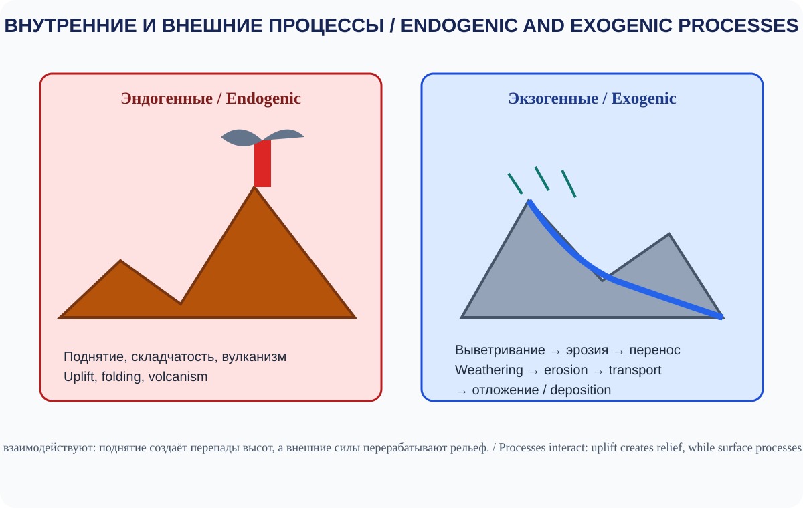
Поднятие создаёт перепады высот, а внешние силы перерабатывают рельеф.Uplift creates relief, while surface processes reshape it.
4.3. Классификация форм рельефаClassification of Landforms
Формы рельефа классифицируют по масштабу, происхождению, морфологии и положению относительно уровня моря.
4.3.1. По масштабуBy Scale
| Масштаб | Примеры |
|---|---|
| Планетарные формы | Материки, океанические впадины |
| Мегаформы | Крупные горные пояса, обширные равнины |
| Макроформы | Хребты, крупные плато, низменности |
| Мезоформы | Долины, овраги, моренные холмы |
| Микроформы | Небольшие борозды, рябь, карстовые углубления |
Границы между масштабными категориями условны и зависят от принятой геоморфологической классификации.
4.3.2. По происхождениюBy Origin
- Тектонические.
- Вулканические.
- Флювиальные (речные).
- Ледниковые и водно-ледниковые.
- Эоловые (ветровые).
- Карстовые.
- Береговые и морские.
- Склоновые.
- Ударные (импактные).
- Антропогенные.
Иллюстрация 4.3-A — Классификация форм рельефаLandform Classification.

Формы классифицируют по происхождению, размеру и положению; категории могут пересекаться.Landforms are classified by origin, scale and setting; categories can overlap.
4.4. Горы и горные системыMountains and Mountain Systems
Горы — участки земной поверхности, значительно возвышающиеся над окружающей местностью и обладающие выраженным расчленением рельефа. Единого универсального порога высоты, отделяющего горы от холмов, нет: определения различаются между странами и научными классификациями.
4.4.1. Происхождение горMountain Building
Основные типы горных областей по строению и происхождению:
- Складчатые горы: возникают при сжатии и складчатой деформации слоёв земной коры.
- Складчато-надвиговые горы: разновидность складчатых гор, формирующаяся при значительном укорочении коры, складчатости и надвигах.
- Глыбовые горы: связаны с разломами и вертикальными перемещениями блоков.
- Вулканические горы: образуются в результате накопления лавы и пирокластического материала.
- Эрозионно-денудационные массивы: представляют собой остаточные формы, преобразованные длительным разрушением и расчленением.
В реальности многие горные системы имеют сложное строение и сочетают несколько механизмов формирования.
4.4.2. Части горного рельефаMountain Morphology
- Вершина (summit): наиболее высокая точка отдельной горы или массива.
- Гребень (ridge): вытянутая возвышенная часть.
- Хребет (mountain range): протяжённая система горных вершин и склонов.
- Перевал (mountain pass): понижение в гребне, удобное для перехода через горы.
- Склон (slope): наклонная поверхность.
- Подножие (foot): нижняя часть горного склона.
- Межгорная впадина (intermontane basin): понижение между горными сооружениями.
4.4.3. Высота и относительное превышениеElevation and Local Relief
Абсолютная высота показывает положение точки относительно принятого уровня отсчёта, обычно среднего уровня моря. Относительное превышение (местный перепад высот) — разница высот между двумя точками, например между вершиной и долиной у подножия.
Высокая абсолютная отметка не всегда означает большую относительную крутизну или расчленённость. Для анализа горного рельефа нужны оба показателя.
Иллюстрация 4.4-A — Анатомия горного ландшафтаAnatomy of a Mountain Landscape.
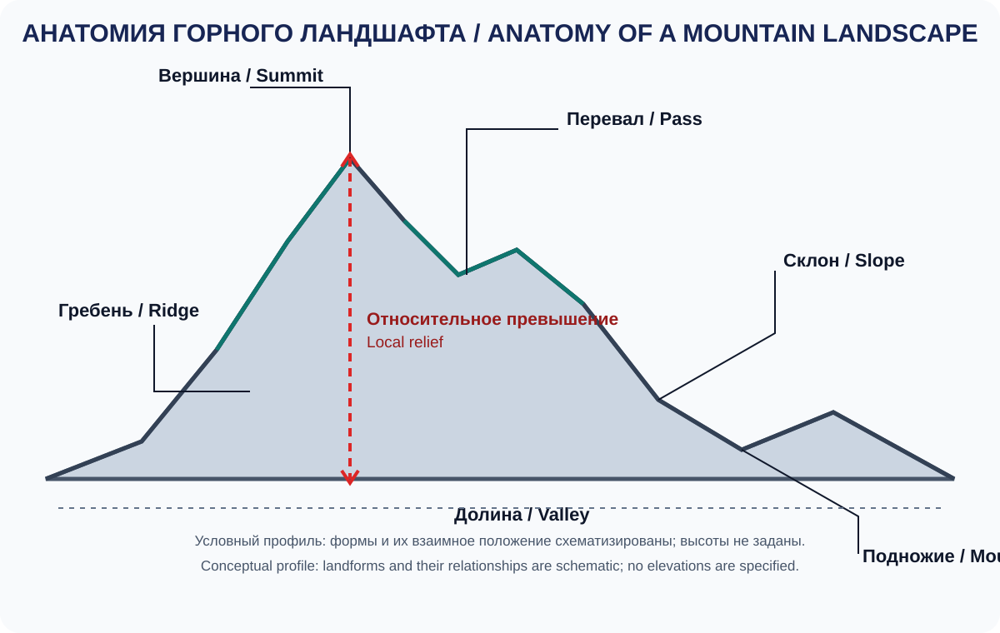
Концептуальный профиль без заданных высот; он показывает взаимное положение форм, а не конкретную горную систему.Conceptual profile with no specified elevations; it shows relationships among landforms, not a specific mountain range.
4.5. Равнины, низменности и платоPlains, Lowlands and Plateaus
Равнины — обширные территории с относительно небольшими перепадами высот и сравнительно слабым общим уклоном поверхности. Они могут быть плоскими, волнистыми или расчленёнными речными долинами. Равнина характеризует прежде всего форму поверхности, а не её абсолютную высоту: равнины встречаются и на возвышенных участках.
Основные разновидности:
- Низменности (lowlands): равнинные территории с небольшими абсолютными высотами; в разных классификациях часто выделяются участки до примерно 200 м, но порог условен.
- Возвышенности (uplands): равнинные или волнистые территории, расположенные выше окружающих низменностей.
- Плато: обширная относительно ровная возвышенная поверхность, часто ограниченная крутыми склонами или уступами; она может быть расчленена глубокими долинами. Термины «плато» и «плоскогорье» в разных классификациях частично перекрываются.
- Нагорья (highlands): крупные возвышенные области со сложным сочетанием плато, хребтов и впадин.
Равнины формируются в результате накопления осадков, выравнивания древнего рельефа, тектонических движений, вулканических процессов и длительной денудации. По происхождению выделяют, например, аллювиальные равнины речных долин, озёрные и прибрежные равнины, водно-ледниковые зандровые равнины, лавовые равнины и поверхности, выровненные длительной эрозией.
Иллюстрация 4.5-A — Равнины, низменности и платоPlains, Lowlands and Plateaus.
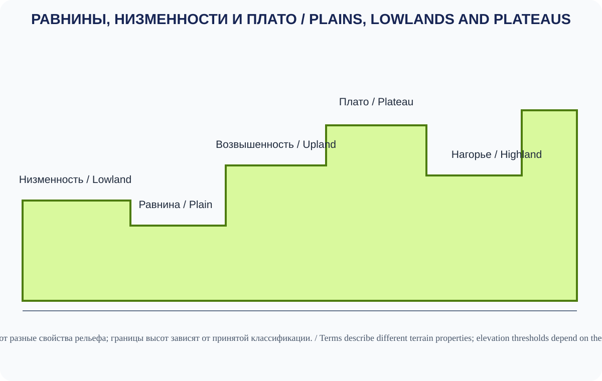
Высоты условны; термины описывают разные свойства рельефа, а пороги зависят от классификации.Elevations are illustrative; terms describe different terrain properties and thresholds depend on classification.
4.6. Речные формы рельефаFluvial Landforms
Реки и временные водные потоки разрушают породы, переносят осадки и формируют новые формы рельефа. Интенсивность процессов зависит от расхода воды, уклона, геологии, растительного покрова и климата.
4.6.1. Речная эрозияRiver Erosion
- Глубинная эрозия: углубление русла.
- Боковая эрозия: расширение долины и смещение русла.
- Регрессивная эрозия: продвижение врезания вверх по течению, к истоку.
4.6.2. Основные речные формыMajor Fluvial Landforms
- речные долины и ущелья;
- каньоны;
- меандры;
- поймы;
- речные террасы;
- конусы выноса;
- дельты;
- аллювиальные равнины.
Меандр — изгиб русла, который обычно развивается вследствие неодинакового распределения скоростей потока: на внешнем берегу преобладает размыв, а на внутреннем — накопление наносов. Пойма — часть речной долины, периодически затапливаемая при высоких уровнях воды. Речная терраса — ступенчатая площадка на борту долины, часто представляющая собой бывшую пойму, оставшуюся выше современного русла после его врезания или изменения базиса эрозии. Базис эрозии — наименьший уровень, до которого река может врезать русло: глобальный базис связан с уровнем моря, а местный может задаваться озером, более крупной рекой или устойчивым скальным порогом. Старица — дугообразное озеро, образовавшееся после отсечения изгиба меандра от основного русла. Конус выноса — веерообразное скопление наносов там, где поток выходит из узкой долины на более пологую поверхность и теряет часть транспортирующей способности. Дельта формируется там, где река при впадении в озеро, море или другой водоток замедляется и теряет часть транспортирующей способности, поэтому наносы накапливаются у устья. Форма дельты зависит от соотношения речного притока осадков, волн и приливных течений. Не каждое устье образует дельту: сильные волны и течения могут перераспределять или уносить наносы.
Иллюстрация 4.6-A — Речные формы рельефаRiver Landforms.
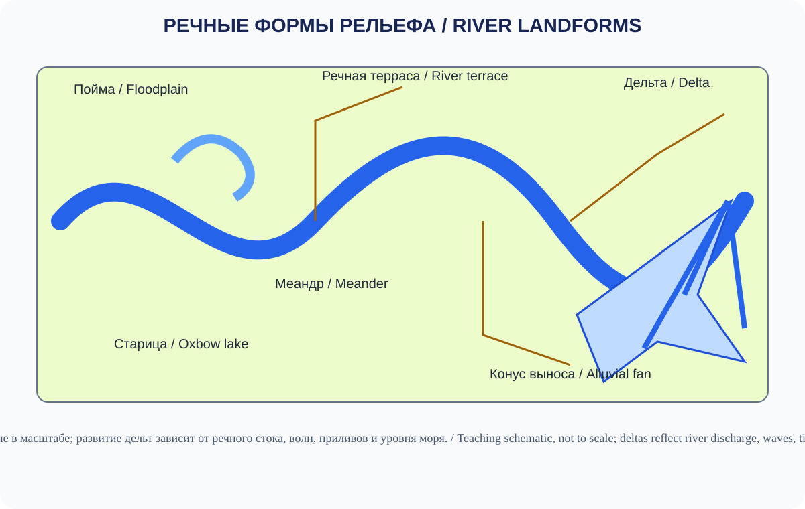
Схема не в масштабе; развитие дельт зависит от речного стока, волн, приливов и уровня моря.Not to scale; delta development depends on river discharge, waves, tides and sea level.
4.7. Ледниковые формы рельефаGlacial Landforms
Ледники движутся под действием силы тяжести и преобразуют поверхность посредством разрушения, переноса и отложения материала.
4.7.1. Эрозионные формыErosional Landforms
- Кар (cirque): чашеобразное углубление в верхней части горного склона.
- Троговая долина (U-shaped valley): широкая долина с относительно плоским дном и крутыми бортами, преобразованная ледником.
- Рог (horn): острая вершина, сформированная при развитии нескольких ледниковых каров.
- Арет (arête): узкий острый гребень между ледниковыми долинами или карами.
- Фьорд (fjord): затопленная морем глубокая ледниковая долина.
4.7.2. Аккумулятивные формыDepositional Landforms
- морены;
- друмлины;
- озы;
- камы;
- зандровые равнины;
- валуны-эрратики.
Морены обычно состоят из несортированного материала, перенесённого и отложенного ледником; они могут образовывать боковые, конечные, срединные и донные гряды или покровы. Друмлины — вытянутые сглаженные холмы из ледниковых отложений, часто ориентированные по направлению движения льда. Озы — извилистые гряды песка и гравия, отложенные потоками талой воды внутри или под ледником. Камы — холмы слоистых песков и гравия, накопленных талыми водами у края или внутри ледника. Зандровые равнины формируются перед ледником из осадков талых вод. Эрратические валуны — крупные обломки, перенесённые ледником далеко от места их происхождения. Эти формы помогают реконструировать положение и динамику древних ледников.
Иллюстрация 4.7-A — Ледниковые формы рельефаGlacial Landforms.
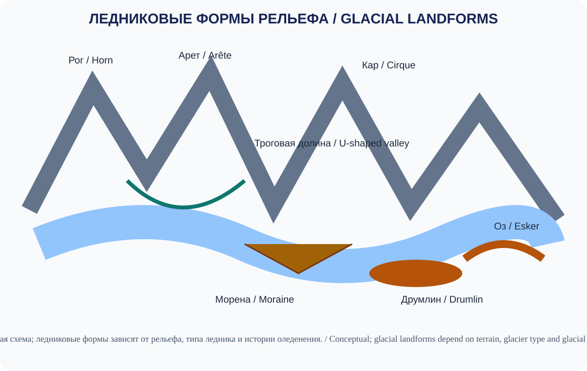
Условная схема; набор форм зависит от типа ледника, рельефа и истории оледенения.Conceptual diagram; landforms depend on glacier type, terrain and glacial history.
4.8. Эоловые формы рельефаAeolian Landforms
Ветер переносит частицы и формирует рельеф преимущественно в засушливых и полузасушливых районах, а также на песчаных побережьях и в областях с разреженным растительным покровом.
Основные процессы: - дефляция — выдувание рыхлого материала; - корразия — абразивное воздействие переносимых ветром частиц; - аккумуляция — отложение песка и пыли.
Типичные формы: - дюны; - барханы; - продольные и поперечные песчаные гряды; - дефляционные котловины; - лёссовые покровы и отложения.
Форма дюны зависит от режима ветров, доступности песка, влажности и растительности. Бархан обычно имеет серповидную форму; его «рога» направлены по ветру. Он формируется при ограниченном запасе песка и устойчивом преобладающем направлении ветра. Поперечные дюны располагаются грядами примерно поперёк преобладающего ветра и обычно требуют обильного запаса песка. Продольные дюны вытянуты примерно вдоль результирующего направления ветров. Дефляционные котловины возникают при выдувании рыхлого материала, а лёсс представляет собой накопления пылеватых частиц, перенесённых ветром.
Иллюстрация 4.8-A — Эоловые формы рельефаAeolian Landforms.
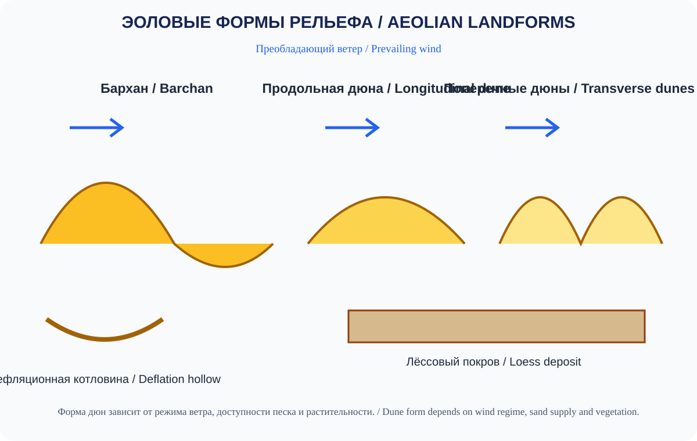
Форма дюн зависит от режима ветра, доступности песка и растительности.Dune form depends on wind regime, sand supply and vegetation.
4.9. Карстовый рельефKarst Landforms
Карст развивается при растворении растворимых пород — прежде всего известняков, доломитов, гипса и каменной соли — природными водами. Растворённый углекислый газ может повышать способность воды растворять карбонатные породы. Интенсивность карстообразования зависит от состава пород, трещиноватости, водообмена, температуры и химии воды.
Основные поверхностные формы: - карры — небольшие борозды и желобки, возникающие при растворении поверхности известняка; - карстовые воронки — замкнутые углубления, образованные растворением породы или обрушением кровли полости; - поноры — отверстия, через которые поверхностный поток уходит под землю; - карстовые долины; - полья — крупные замкнутые карстовые котловины с относительно плоским дном.
Подземные формы: - пещеры и галереи; - колодцы и шахты; - подземные реки; - натёчные образования — сталактиты свисают с потолка, сталагмиты растут со дна, а сталагнаты образуются при их соединении.
Карстовые территории могут быть уязвимы к загрязнению подземных вод, поскольку вода быстро проникает через трещины и полости.
Иллюстрация 4.9-A — Карстовая системаKarst System.
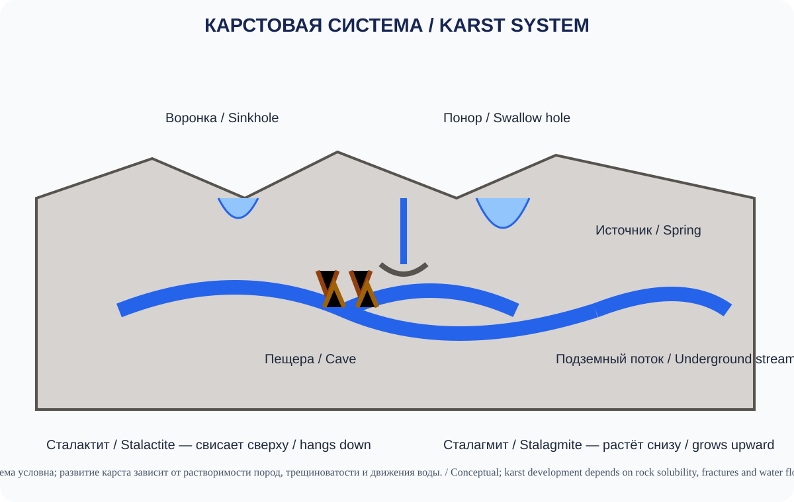
Карст развивается в растворимых породах; схема показывает типичные, но не обязательные элементы одной системы.Karst develops in soluble rocks; the diagram shows typical, not compulsory, components of a system.
4.10. Береговые и морские формы рельефаCoastal and Marine Landforms
Морские волны, течения, приливы и изменения уровня моря преобразуют побережья. На результат влияют геологическое строение, энергия волн, запас наносов и относительное движение суши и моря.
4.10.1. Абразионные формыErosional Coasts
- морские клифы — крутые уступы, сформированные разрушением берега;
- волноприбойные ниши — выемки у основания клифа;
- абразионные платформы — относительно ровные скальные поверхности у подножия отступающего клифа;
- морские пещеры и арки;
- скальные останцы (стэки) — изолированные скалы, оставшиеся после разрушения арки или мыса.
4.10.2. Аккумулятивные формыDepositional Coasts
- пляжи — полосы песка, гравия или гальки, накопленные у берега;
- косы — узкие вытянутые аккумулятивные формы, соединённые с сушей одним концом;
- пересыпи и бары — песчаные или галечные валы, частично или полностью отделяющие водное пространство от моря;
- томболо — песчаная или галечная перемычка, соединяющая остров с материком или другим островом;
- барьерные острова — вытянутые острова из наносов, отделённые от материка мелководьем или лагуной;
- лагуны — мелководные водоёмы, частично отделённые от моря косой, баром или барьерным островом;
- дельтовые побережья.
Литоральный перенос (вдольбереговой дрейф) возникает, когда волны подходят к берегу под углом: прибой перемещает песок и гальку вверх по пляжу косо, а обратный поток возвращает воду и часть наносов вниз по склону. В результате материал постепенно перемещается вдоль берега. Этот процесс способствует формированию кос, баров и других аккумулятивных форм.
Побережье может одновременно испытывать разрушение и накопление осадков на соседних участках.
4.10.3. Подводный рельефSubmarine Relief
Главные элементы дна океана: - континентальный шельф — относительно мелководная затопленная окраина материка; - континентальный склон — более крутой переход от шельфа к глубоководному дну; - континентальное подножие — область накопления осадков у основания склона (там, где оно развито); - абиссальные равнины — обширные глубоководные участки с небольшими уклонами; - срединно-океанические хребты — протяжённые подводные горные системы, связанные с образованием новой океанической коры; - глубоководные желоба — узкие глубокие впадины, часто связанные с субдукцией; - подводные горы (seamounts) — изолированные возвышения морского дна, часто вулканического происхождения; - вулканические плато — обширные подводные поверхности, образованные накоплением лавы.
Иллюстрация 4.10-A — Побережье и рельеф дна океанаCoastal and Ocean-Floor Relief.
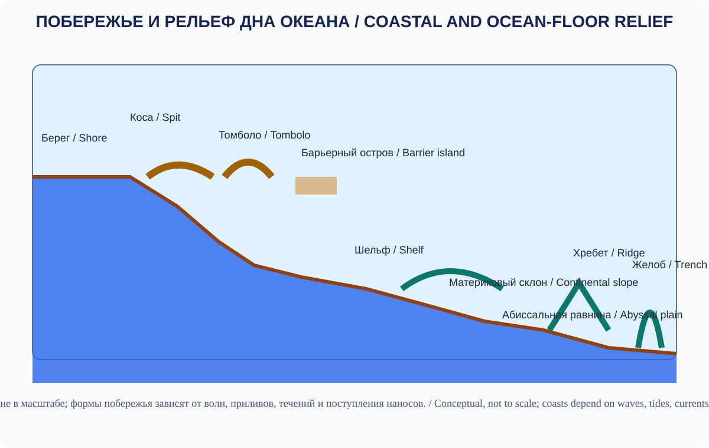
Схема не в масштабе; формы побережья зависят от волн, приливов, течений и поступления наносов.Not to scale; coasts depend on waves, tides, currents and sediment supply.
4.11. Склоновые процессы и денудацияSlope Processes and Denudation
Склоновые процессы, или массовые движения, перемещают грунт и горные породы вниз по склону под действием силы тяжести. Склон теряет устойчивость, когда движущие силы превышают сопротивление материала; насыщение водой, выветривание, подрезка основания склона, землетрясения и строительство могут изменить это соотношение. Движения бывают быстрыми и медленными. В используемой здесь схеме, основанной на классификации Варнеса, выделяют пять типов движения: падения, опрокидывания, скольжения, боковые растекания и потоки; в одном событии могут сочетаться несколько типов. В некоторых учебных обзорах приводят четыре более общие группы, не выделяя растекания отдельно, поэтому классификацию следует читать с учётом принятой схемы. Дополнительно учитывают материал: коренные породы, обломочный материал и мелкозёмистый грунт.
- Обвалы и камнепады (падения): обломки отделяются от крутого склона, падают, подпрыгивают или скатываются вниз.
- Опрокидывания: блок породы поворачивается вперёд вокруг точки или оси опоры.
- Оползни (скольжения): масса грунта или породы перемещается по поверхности ослабления; скольжение может быть вращательным по криволинейной поверхности или поступательным по относительно плоской.
- Боковые растекания: грунт или осадки смещаются в стороны, иногда над разжиженным или слабым слоем.
- Сели и другие обломочные потоки: насыщенная водой смесь грунта и обломков быстро движется вниз по склону или руслу.
- Осыпи: скопления угловатых обломков у подножия склона, обычно образованные многократными камнепадами и скатыванием.
- Крип: очень медленное, часто почти незаметное перемещение грунта или пород вниз по склону.
- Солифлюкция: медленное течение водонасыщенного грунта вниз по склону, особенно в холодных районах во время сезонного оттаивания.
Денудация — совокупность процессов разрушения и снижения рельефа, включая выветривание, склоновые перемещения, эрозию и перенос материала.
Скорость склоновых процессов зависит от крутизны склона, состава и структуры пород, увлажнения, растительности, землетрясений и инженерного воздействия.
4.11.1. Как оценивать устойчивость склона
Крутизна склона сама по себе не позволяет надёжно предсказать оползень. Для оценки склоновой опасности рассматривают сочетание геометрии склона, свойств пород и грунтов, воды, растительности, нагрузки и возможных внешних воздействий.
Что изучают: угол и высоту склона; слоистость и трещиноватость пород; наличие глинистых прослоев; влажность и уровень подземных вод; следы прежних смещений; подрезку склона дорогой или рекой; дополнительные нагрузки у бровки. Осадки и снеготаяние могут повышать давление воды в порах и снижать сопротивление сдвигу, но реакция зависит от геологии и дренажа.
Признаки для полевого наблюдения: свежие уступы и трещины, наклон деревьев или столбов, деформация дорог, смещение ограждений, выпучивание грунта у подошвы, необычное просачивание воды. Отдельный признак не является диагнозом; при его обнаружении нужна оценка квалифицированных специалистов. Нельзя приближаться к активному оползню или входить в зону возможного повторного движения.
От опасности к риску. Карта потенциально неустойчивых склонов показывает, где процесс может возникнуть. Риск зависит от вероятности и интенсивности опасного процесса, наличия людей и объектов в зоне воздействия, их уязвимости и возможностей предупреждения и эвакуации. Карта восприимчивости не заменяет инженерно-геологическое обследование и не является прогнозом даты события.
Учебная работа. Сравните два условных склона одинаковой крутизны: на первом — плотная скальная порода и организованный водоотвод; на втором — трещиноватые водонасыщенные отложения и подрезанная подошва. Составьте перечень дополнительных данных, необходимых для сравнения их устойчивости. Не присваивайте численную вероятность без модели и исходных данных.
Иллюстрация 4.11-A — Процессы на склонахSlope Processes.
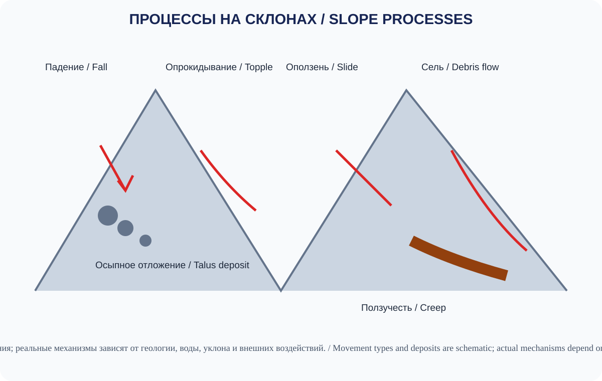
Тип движения зависит от геологии, воды, уклона и внешних воздействий; рисунок не является прогнозом устойчивости склона.Movement depends on geology, water, slope and triggers; this diagram is not a slope-stability assessment.
4.12. Выветривание горных породWeathering
Выветривание — разрушение и изменение горных пород непосредственно на поверхности или вблизи неё под воздействием физических, химических и биологических факторов. В отличие от эрозии, выветривание не обязательно сопровождается переносом материала.
4.12.1. Физическое выветриваниеPhysical Weathering
Физическое выветривание дробит породу на более мелкие части без существенного изменения химического состава. При морозном выветривании вода проникает в трещины, замерзает и расширяется, постепенно увеличивая их. Термическое выветривание связано с повторным нагреванием и охлаждением. Рост кристаллов солей в порах также может разрушать породу. При снятии вышележащей нагрузки порода способна расширяться и расслаиваться (разгрузочное выветривание). Корни растений и другие организмы могут механически расширять трещины.
4.12.2. Химическое выветриваниеChemical Weathering
Химическое выветривание изменяет или растворяет минералы в результате реакций с водой, кислородом, углекислым газом и кислотами. При растворении минералы переходят в раствор; гидролиз — реакция воды с минералами, особенно силикатами, которая может приводить к образованию глин; окисление происходит при реакции кислорода с минералами, содержащими железо; гидратация связана с включением воды в структуру минерала; углекислотное выветривание — растворение карбонатных пород водой с растворённым углекислым газом.
4.12.3. Биологическое выветриваниеBiological Weathering
Организмы воздействуют на породы механически и химически: корни расширяют трещины, микроорганизмы и лишайники выделяют вещества, способствующие преобразованию минералов.
Климат определяет интенсивность разных типов выветривания, однако важны также порода, рельеф, водный режим и время.
Иллюстрация 4.12-A — ВыветриваниеWeathering Processes.
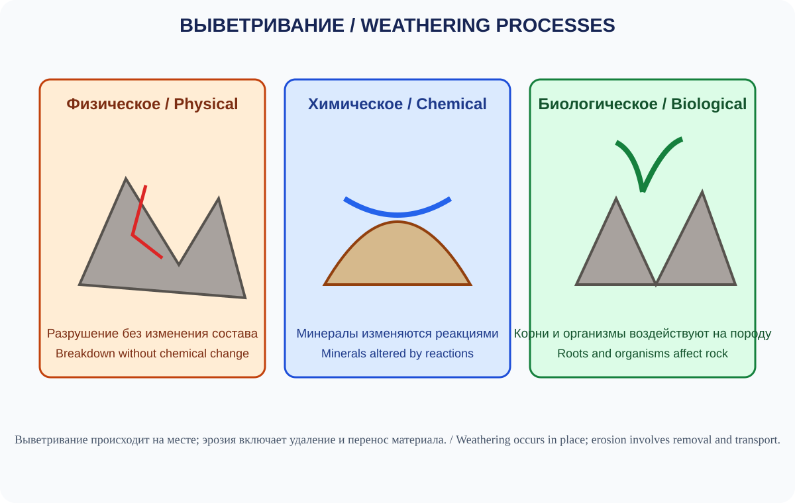
Выветривание изменяет породу на месте; эрозия связана с удалением и переносом материала.Weathering alters rock in place; erosion involves removal and transport.
4.13. Высота, глубина и экстремумы рельефа ЗемлиElevation, Depth and Earth's Extremes
Рельеф Земли включает как высочайшие горные вершины, так и глубокие океанические впадины. При сравнении экстремумов необходимо уточнять метод измерения и систему высот или глубин.
- Эверест — высочайшая вершина суши; совместно объявленная Китаем и Непалом высота снежной поверхности составляет 8 848,86 ± 0,06 м по Международной системе высот (IHRS; измерение 2020 года; оценка неопределённости приведена в технической геодезической публикации).
- Челленджер-Дип в Марианской впадине — наиболее глубокая известная область океанского дна, но её глубина зависит от места, метода съёмки и обработки данных. Исследование 2021 года по измерениям с подводного аппарата сообщило 10 935 ± 6 м (95%-й доверительный интервал относительно среднего уровня моря). Опубликованное в 2026 году исследование многолучевой съёмки, выполненной в 2023 году, дало предпочтительную сеточную оценку 10 927 м для восточной котловины; при использовании альтернативных моделей скорости звука максимальные значения в наборе составили 10 914–10 932 м. Авторы подчёркивают, что значение 10 927 м не является окончательным пересмотром глубочайшей точки.
- Побережье Мёртвого моря включает одни из наиболее низко расположенных участков открытой суши; их высота меняется вместе с уровнем озера.
- Тибетское нагорье — одно из крупнейших и высочайших плато мира.
Важно различать высоту над уровнем моря, глубину относительно поверхности океана и глубину относительно геоида. Значения экстремумов должны сопровождаться датой и источником измерения.
Иллюстрация 4.13-A — Вертикальные крайности ЗемлиEarth's Vertical Extremes.
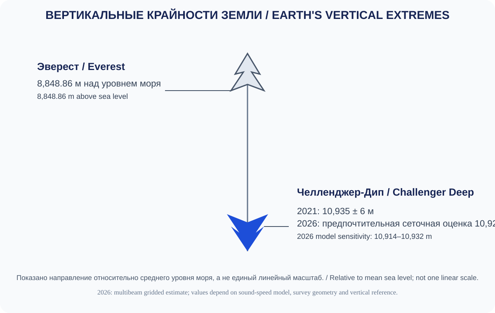
Оценки глубины Челленджер-Дип зависят от метода, модели скорости звука, геометрии съёмки и вертикальной системы отсчёта; 10 927 м — предпочтительная сеточная оценка одного исследования 2026 года, а не окончательное универсальное значение.Challenger Deep estimates depend on method, sound-speed model, survey geometry and vertical datum; 10,927 m is the preferred gridded estimate in one 2026 study, not a definitive universal value.
4.14. Изучение и изображение рельефаMapping and Measuring Relief
Рельеф исследуют с помощью наземных измерений, топографической съёмки, спутниковых данных, аэрофотосъёмки, лидарных систем и цифровых моделей высот.
4.14.1. Способы изображения рельефаRelief Representation
- Горизонтали (contour lines): линии, соединяющие точки одинаковой высоты.
- Гипсометрическая окраска (hypsometric tinting): цветовая передача высотных диапазонов.
- Отмывка рельефа (hillshading): имитация освещения поверхности для подчёркивания форм.
- Точечные отметки высот: численные значения отдельных точек.
- Профили рельефа: графическое представление изменения высоты вдоль выбранной линии.
На стандартной топографической карте горизонтали обычно не пересекаются; нависающий рельеф требует особого картографического отображения. Чем ближе горизонтали друг к другу, тем круче склон, если высота сечения рельефа постоянна.
4.14.2. Цифровые модели высотDigital Elevation Models
Цифровая модель высот (DEM) — растровое представление высот поверхности. В одних наборах данных модель описывает рельеф земли без зданий и растительности, в других — верхнюю поверхность, включая растительность, здания или лёд. Цифровая модель поверхности (DSM) обычно отражает верх объектов и растительного покрова, а цифровая модель рельефа (DTM) стремится описать поверхность земли без таких объектов. Терминология различается между ведомствами и программами, поэтому необходимо проверять определение и метаданные конкретного набора данных. Например, глобальная модель NOAA ETOPO 2022 объединяет топографию суши и батиметрию океана с шагом сетки 15 угловых секунд; для Гренландии и Антарктиды доступны варианты, показывающие поверхность ледникового щита или коренное ложе подо льдом. Такой шаг соответствует примерно 460 м по широте у экватора; модель подходит для глобальных и региональных обзоров, но не для детального инженерного анализа отдельного участка.
DEM используют для расчёта уклонов, экспозиции склонов, водосборов, линий водоразделов, объёмов земляных работ и других параметров. Важно учитывать пространственное разрешение, вертикальную точность, горизонтальную и вертикальную системы отсчёта, источник и дату съёмки, метод обработки, а также наличие растительности или зданий. Более мелкий размер ячейки сам по себе не гарантирует большей точности: разрешение должно соответствовать плотности и качеству исходных данных.
Иллюстрация 4.14-A — Чтение топографической картыReading a Topographic Map.
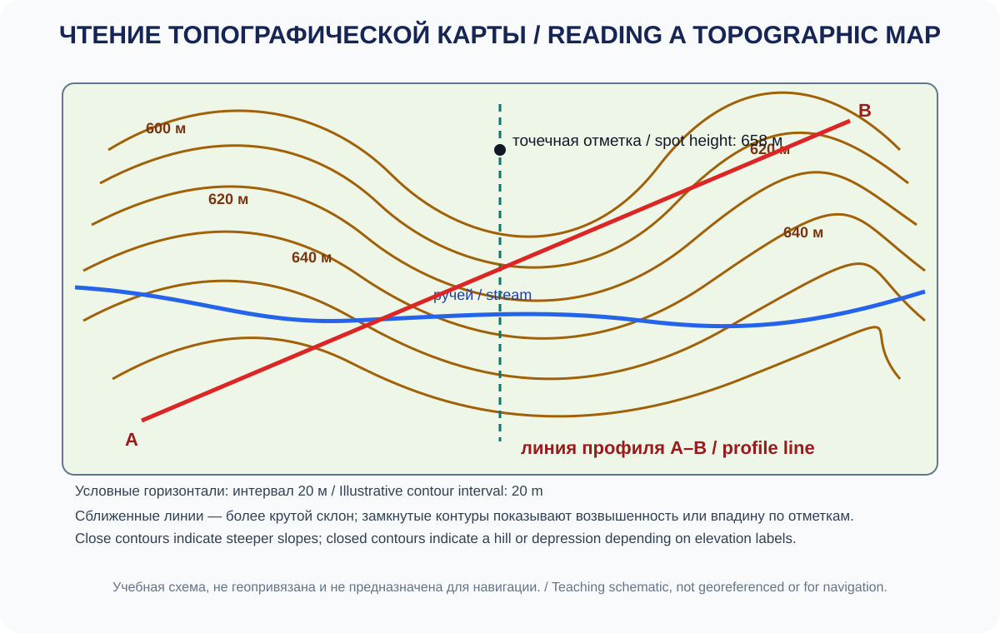
Схематический учебный пример, не геопривязанная карта. Интервал горизонталей на рисунке условно принят равным 20 м; принципы чтения горизонталей сверены с USGS Topographic Mapping и US Topo Map Symbol Guide.Schematic teaching example, not a georeferenced map. The illustrative contour interval is 20 m; contour-reading principles follow the USGS Topographic Mapping and US Topo Map Symbol Guide.
Иллюстрация 4.14-B — DEM, DSM и DTMDEM, DSM and DTM.
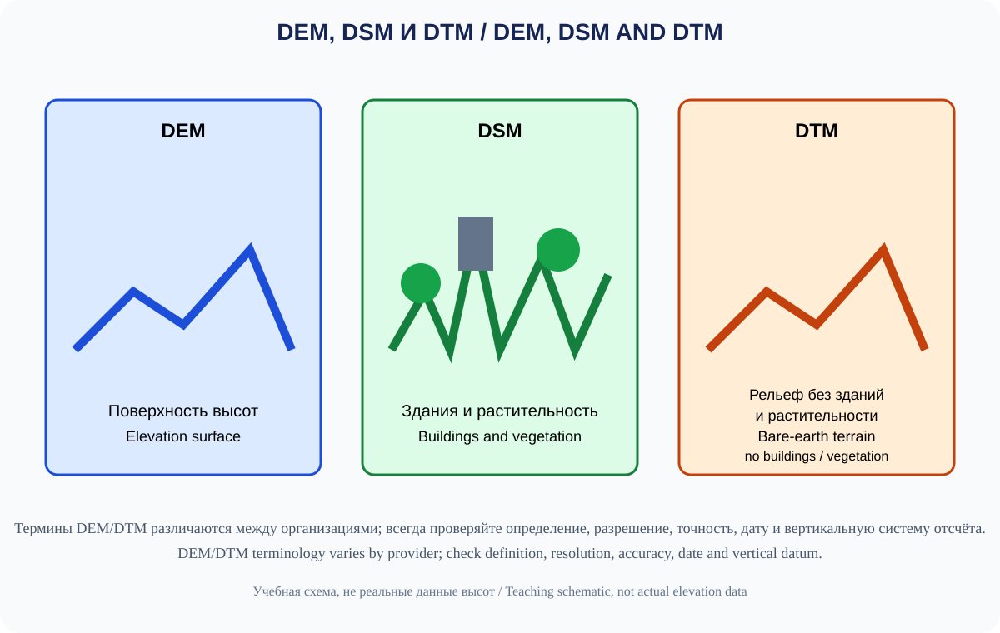
Термины DEM/DTM различаются между организациями; проверяйте определение, разрешение, точность, дату и вертикальную систему отсчёта.DEM/DTM terminology varies by provider; check definition, resolution, accuracy, date and vertical datum.
4.14.3. Практический пример: определение уклона по горизонталям
Предположим, на топографической карте с масштабом 1:25 000 высота одной горизонтали отличается от следующей на 20 м. Между точками A и B пересекаются пять интервалов горизонталей, а измеренное расстояние между ними на карте составляет 2 см.
Шаг 1. Определяем разницу высот.
Пять интервалов по 20 м дают превышение: 5 × 20 = 100 м. Предположим, точка B расположена выше точки A.
Шаг 2. Переводим расстояние в горизонтальное расстояние на местности.
При масштабе 1:25 000 один сантиметр на карте соответствует 250 м на местности. Следовательно, 2 см соответствуют 500 м.
Шаг 3. Рассчитываем уклон.
Уклон в процентах рассчитывается как отношение превышения к горизонтальному расстоянию, умноженное на 100%:
Уклон (%) = (вертикальное превышение / горизонтальное расстояние) × 100.
100 м / 500 м × 100% = 20%.
Это означает, что поверхность в среднем поднимается на 20 м на каждые 100 м горизонтального расстояния. Угол наклона можно рассчитать как θ = arctan(вертикальное превышение / горизонтальное расстояние); здесь θ ≈ arctan(100/500) ≈ 11,3°. Процентный уклон и угол в градусах — разные способы выражения крутизны.
Важно: расчёт характеризует средний уклон между двумя точками, а не каждую часть склона. Если горизонтали расположены неравномерно, уклон на отдельных участках может отличаться. Расстояние следует измерять по горизонтали, а не вдоль извилистой линии поверхности.
Проверьте себя: как изменится процентный уклон, если при том же превышении 100 м горизонтальное расстояние составит 250 м?
Ответ для самопроверки: 100 м / 250 м × 100% = 40%; угол наклона — примерно 21,8° (θ ≈ arctan(100/250)).
4.15. Рельеф и жизнь человекаRelief and Human Activities
Рельеф создаёт возможности и ограничения для расселения и хозяйства.
| Сфера | Влияние рельефа |
|---|---|
| Расселение | Равнины часто удобны для крупных поселений; горные долины ограничивают площадь застройки |
| Сельское хозяйство | Уклон влияет на механизацию, эрозию и орошение |
| Транспорт | Перевалы, ущелья и крутые склоны усложняют строительство дорог |
| Энергетика | Перепады высот создают потенциал гидроэнергетики |
| Туризм | Горы, каньоны, пещеры и побережья формируют туристические ресурсы |
| Безопасность | Оползни, сели, обвалы и землетрясения создают природные риски |
Человеческая деятельность сама меняет рельеф: карьеры, насыпи, дамбы, террасирование склонов, дорожные выемки, городская застройка и водохранилища создают антропогенные формы.
Иллюстрация 4.15-A — Изменение рельефа человекомHuman Modification of Relief.
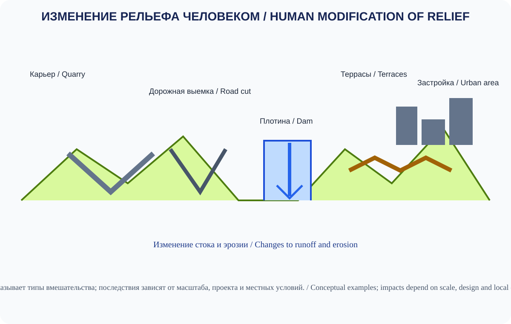
Последствия для стока и эрозии зависят от масштаба работ, проекта и местных условий.Effects on runoff and erosion depend on scale, design and local conditions.
Итоги главыChapter Summary
- Рельеф — результат длительного взаимодействия внутренних и внешних процессов Земли.
- Геоморфология изучает происхождение, строение, возраст и динамику форм рельефа.
- Горы, равнины и плато различаются по морфологии, высоте и генезису.
- Реки, ледники, ветер, морские волны и подземные воды создают характерные формы рельефа.
- Выветривание разрушает и преобразует породы, а эрозия и аккумуляция перемещают и накапливают материал.
- Склоновые процессы могут быть медленными или катастрофическими.
- Современные карты и цифровые модели высот позволяют количественно анализировать поверхность Земли.
- Рельеф влияет на природные условия, экономику, инфраструктуру и безопасность населения.
Контрольные вопросыReview Questions
- Что изучает геоморфология?
- Чем эндогенные процессы отличаются от экзогенных?
- Какие формы рельефа относятся к планетарным и макроформам?
- Чем абсолютная высота отличается от относительной?
- Как образуются речные террасы и дельты?
- Какие формы рельефа создают ледники?
- Чем бархан отличается от продольной дюны?
- Какие породы подвержены карстованию?
- Чем выветривание отличается от эрозии?
- Как горизонтали помогают определить крутизну склона?
Практическая работаPractical Assignment
Задание: анализ топографической карты и профиля рельефа.
По подготовленному учебному фрагменту карты: - определите высоту нескольких точек; - найдите водораздел и речную долину; - оцените крутизну двух склонов; - проведите линию профиля и постройте вертикальный разрез, указав горизонтальный и вертикальный масштабы; если они различаются, обозначьте вертикальное преувеличение. Его коэффициент равен знаменателю горизонтального масштаба, делённому на знаменатель вертикального масштаба (например, 1:25 000 по горизонтали и 1:5 000 по вертикали дают преувеличение 5×); - определите участки с потенциально повышенной эрозионной или склоновой восприимчивостью. Не называйте результат картой риска без дополнительных данных о породах, осадках, растительности, землепользовании, населении и объектах.
Иллюстрация 4.15-B — Упражнение по топографической картеTopographic Map Exercise.
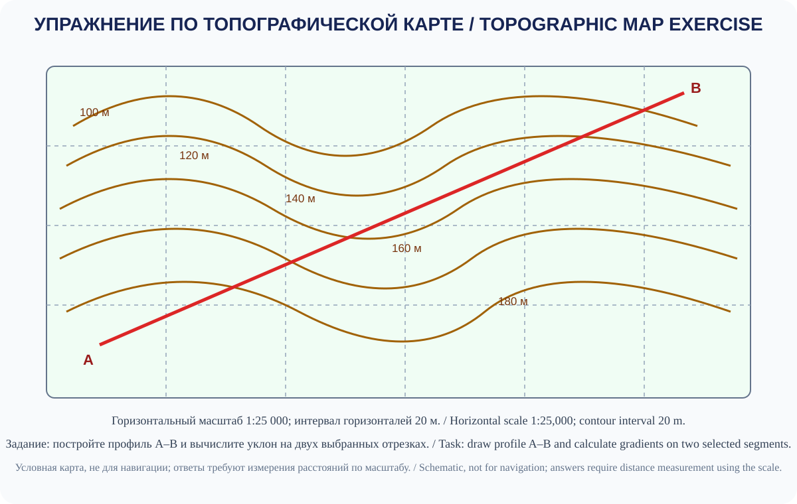
Карта не предназначена для навигации; учащиеся измеряют расстояния по масштабу, строят профиль и рассчитывают уклон.Not for navigation; students measure distances using the scale, draw a profile and calculate gradient.
Ключ к расчётной части / Answer key for the calculation task. По данным схемы: A–C — перепад 40 м на 500 м по горизонтали, уклон = 40 / 500 × 100 = 8% (угол ≈ 4,6°); C–B — перепад 20 м на 750 м, уклон = 20 / 750 × 100 ≈ 2,7% (угол ≈ 1,5°).Точечные отметки: A — 100 м, C — 140 м, B — 160 м. / From the diagram: A–C rises 40 m over 500 m horizontally, giving 8% (≈ 4.6°); C–B rises 20 m over 750 m, giving ≈ 2.7% (≈ 1.5°). Spot heights: A 100 m, C 140 m, B 160 m.
Introduction
Relief is the set of irregularities on Earth's surface, differing in origin, size, shape, age and developmental history. It forms through the combined action of internal (endogenic) and external (exogenic) processes.
Relief influences climate, river networks, soil formation, vegetation, human settlement, transport and economic activity. Its study brings together geomorphology, geology, climatology, hydrology, cartography and remote sensing.
4.1. Geomorphology and Key Concepts
Geomorphology is the science that studies landforms, their origin, structure, age, dynamics and spatial distribution.
Key concepts include:
- Landform: an individual natural feature of the surface, such as a mountain, valley, plain, gully or dune.
- Morphology: the geometry and external appearance of a landform.
- Morphometry: quantitative characteristics such as elevation, depth, slope, area and degree of dissection.
- Genesis: the origin of a landform and the processes that created it.
- Landform age: the time when a landform formed or underwent its last major transformation.
The same external shape may have different origins. A basin, for example, may be tectonic, glacial, volcanic or erosional. Geomorphological analysis therefore considers geological context as well as appearance.
4.2. Controls on Landform Development
Landform development depends on several interacting groups of factors:
- Geological structure and rock composition.
- Tectonic movement and volcanism.
- Climate and climate change.
- Water, ice, wind and gravity.
- Vegetation, soils and biological activity.
- Human activity.
4.2.1. Endogenic Processes
Endogenic processes are driven by Earth's internal energy. They include tectonic movement, folding, faulting, uplift and subsidence of the crust, magmatism and volcanism. They create large structural features such as mountain belts, plateaus, rift basins, volcanic edifices and ocean ridges.
4.2.2. Exogenic Processes
Exogenic processes operate at or near the surface and modify existing landforms. Their main energy sources are solar radiation and gravity. They include weathering, erosion and transport, sediment accumulation, river and temporary-stream action, glacial processes, aeolian processes, karst and slope movements.
Illustration 4.2-A — Endogenic and Exogenic Processes.
Поднятие создаёт перепады высот, а внешние силы перерабатывают рельеф.Uplift creates relief, while surface processes reshape it.
4.3. Classification of Landforms
Landforms are classified by scale, origin, morphology and position relative to sea level.
4.3.1. By Scale
By scale, geographers distinguish planetary forms (continents and ocean basins), megaforms (major mountain belts and extensive plains), macroforms (ranges, large plateaus and lowlands), mesoforms (valleys, gullies and moraine hills) and microforms (small grooves, ripples and karst depressions). Boundaries between these categories are approximate and depend on the classification used.
4.3.2. By Origin
By origin, landforms may be tectonic, volcanic, fluvial, glacial or glaciofluvial, aeolian, karst, coastal or marine, slope-related, impact-related, or anthropogenic.
Illustration 4.3-A — Landform Classification.
Формы классифицируют по происхождению, размеру и положению; категории могут пересекаться.Landforms are classified by origin, scale and setting; categories can overlap.
4.4. Mountains and Mountain Systems
Mountains are parts of Earth's surface that rise significantly above their surroundings and have strongly dissected relief. There is no universal elevation threshold separating mountains from hills; definitions vary between countries and scientific classifications.
4.4.1. Mountain Building
Major mountain types, classified by structure and origin, include: - fold mountains, formed by compression and folding of the crust; - fold-and-thrust belts, a more specific type of fold mountain system formed by substantial crustal shortening, folding and thrusting; - block mountains, associated with faults and vertical movement of crustal blocks; - volcanic mountains, built by accumulated lava and pyroclastic material; and - erosional or denudational massifs, residual forms shaped by prolonged erosion and dissection.
In reality, many mountain systems have complex structures and combine several formation mechanisms.
4.4.2. Mountain Morphology
Parts of mountain relief include a summit (the highest point of a mountain or massif), a ridge (an elongated elevated feature), a mountain range (an extended system of peaks and slopes), a mountain pass (a low point in a ridge that permits passage across mountains), a slope, a foot and an intermontane basin.
Illustration 4.4-A — Anatomy of a Mountain Landscape.
Концептуальный профиль без заданных высот; он показывает взаимное положение форм, а не конкретную горную систему.Conceptual profile with no specified elevations; it shows relationships among landforms, not a specific mountain range.
4.4.3. Elevation and Local Relief
Absolute elevation describes the position of a point relative to a reference surface, usually mean sea level. Local relief (relative elevation) is the height difference between two points, such as a summit and the valley at its foot. A high absolute elevation does not necessarily mean a steep or highly dissected landscape; both measures are needed.
4.5. Plains, Lowlands and Plateaus
Plains are extensive areas with relatively small elevation differences and a generally gentle surface gradient. They may be flat, undulating or dissected by river valleys. A plain describes the shape and relative smoothness of the surface, not necessarily low absolute elevation; plains can also occur at high elevations.
- Lowlands are plains at low absolute elevations. Some classifications use a threshold of about 200 m, but this is not universal.
- Uplands are plain or gently rolling areas elevated above surrounding lowlands.
- Plateaus are extensive, relatively level elevated surfaces, often bounded by steep slopes or escarpments; they may be dissected by deep valleys. In some classifications, the terms plateau and high tableland overlap.
- Highlands are large elevated regions combining plateaus, ranges and basins.
Plains may form through sediment accumulation, the levelling of older relief, tectonic movement, volcanic processes and prolonged denudation. Examples by origin include alluvial plains in river valleys, lacustrine and coastal plains, glaciofluvial outwash plains, lava plains and surfaces levelled by prolonged erosion.
Illustration 4.5-A — Plains, Lowlands and Plateaus.
Высоты условны; термины описывают разные свойства рельефа, а пороги зависят от классификации.Elevations are illustrative; terms describe different terrain properties and thresholds depend on classification.
4.6. Fluvial Landforms
Rivers and temporary flows erode rock, transport sediment and create new landforms. Process intensity depends on discharge, gradient, geology, vegetation and climate.
4.6.1. River Erosion
River erosion may be vertical, deepening the channel; lateral, widening the valley and shifting the channel; or headward, extending incision upstream towards the source.
4.6.2. Major Fluvial Landforms
Major fluvial landforms include river valleys and gorges, canyons, meanders, floodplains, river terraces, alluvial fans, deltas and alluvial plains. A meander is a bend in a river channel. Flow is generally faster near the outer bank, where erosion dominates, and slower near the inner bank, where sediment is more likely to accumulate. A floodplain is the part of a river valley periodically inundated during high water. A river terrace is a step-like bench along a valley side, often representing an older floodplain left above the modern channel after river incision or a change in base level. Base level is the lowest level to which a river can erode: sea level is the ultimate base level for rivers reaching the coast, while lakes, larger rivers or resistant bedrock thresholds can create local base levels. An oxbow lake is a crescent-shaped lake formed when a meander loop is cut off from the main river channel. An alluvial fan is a fan-shaped sediment deposit formed where a stream leaves a confined valley for flatter ground and loses some of its transporting capacity. A delta forms where a river slows as it enters a lake, sea or another river and loses some of its capacity to transport sediment, allowing deposits to build near the mouth. Delta shape depends on the balance between river sediment supply, waves and tidal currents. Not every river mouth forms a delta: strong waves and currents may redistribute or remove the sediment.
Illustration 4.6-A — River Landforms.
Схема не в масштабе; развитие дельт зависит от речного стока, волн, приливов и уровня моря.Not to scale; delta development depends on river discharge, waves, tides and sea level.
4.7. Glacial Landforms
Glaciers move under gravity and transform the surface by erosion, transport and deposition.
4.7.1. Erosional Landforms
Erosional landforms include: - a cirque, a bowl-shaped hollow near the upper part of a mountain slope; - a U-shaped valley, a broad valley with a relatively flat floor and steep sides shaped by a glacier; - a horn, a sharp peak formed where several cirques develop around a mountain; - an arête, a narrow sharp ridge between glacial valleys or cirques; and - a fjord, a deep glacial valley flooded by the sea.
4.7.2. Depositional Landforms
Depositional landforms include moraines, drumlins, eskers, kames, outwash plains and erratic boulders. Moraines commonly consist of unsorted material transported and deposited by ice; they may form lateral, terminal, medial or ground accumulations. Drumlins are elongated, streamlined hills of glacial sediment, commonly aligned with ice flow. Eskers are winding ridges of sand and gravel deposited by meltwater streams within or beneath a glacier. Kames are mounds of layered sand and gravel deposited by meltwater at or within the ice margin. Outwash plains form in front of glaciers from sediment carried by meltwater. Erratic boulders are large rocks transported far from their source by moving ice. These landforms help reconstruct former glacier extent and dynamics.
Illustration 4.7-A — Glacial Landforms.
Условная схема; набор форм зависит от типа ледника, рельефа и истории оледенения.Conceptual diagram; landforms depend on glacier type, terrain and glacial history.
4.8. Aeolian Landforms
Wind transports particles and shapes landscapes mainly in arid and semi-arid regions, on sandy coasts and in areas with sparse vegetation.
The main processes are deflation (removal of loose material by wind), abrasion (wear caused by wind-driven particles) and accumulation (deposition of sand and dust).
Typical landforms include dunes, barchans, longitudinal and transverse sand ridges, deflation hollows and loess deposits. Dune shape depends on wind regime, sand supply, moisture and vegetation. A barchan is usually crescent-shaped, with its horns pointing downwind; it forms where sand supply is limited and one wind direction prevails. Transverse dunes form ridges roughly across the prevailing wind and commonly require abundant sand. Longitudinal dunes are elongated roughly parallel to the resultant wind direction. Deflation hollows form where loose material is removed by wind, while loess consists of wind-transported silt deposits.
Illustration 4.8-A — Aeolian Landforms.
Форма дюн зависит от режима ветра, доступности песка и растительности.Dune form depends on wind regime, sand supply and vegetation.
4.9. Karst Landforms
Karst develops when natural water dissolves soluble rocks, especially limestone, dolomite, gypsum and rock salt. Dissolved carbon dioxide can make water more effective at dissolving carbonate rocks. Its intensity depends on rock composition, fracturing, water circulation, temperature and water chemistry.
Surface karst features include karren (small grooves and runnels dissolved into limestone), sinkholes (closed depressions formed by dissolution or collapse), swallow holes (openings where surface streams disappear underground), karst valleys and poljes (large closed karst depressions with relatively flat floors). Underground features include caves, galleries, shafts, underground rivers and speleothems: stalactites hang from cave ceilings, stalagmites grow from cave floors, and columns form where the two join.
Karst areas may be vulnerable to groundwater pollution because water can move rapidly through fractures and cavities.
Illustration 4.9-A — Karst System.
Карст развивается в растворимых породах; схема показывает типичные, но не обязательные элементы одной системы.Karst develops in soluble rocks; the diagram shows typical, not compulsory, components of a system.
4.10. Coastal and Marine Landforms
Waves, currents, tides and sea-level changes reshape coasts. The outcome depends on geological structure, wave energy, sediment supply and the relative movement of land and sea.
4.10.1. Erosional Coasts
Erosional coasts may include sea cliffs (steep coastal slopes cut by wave action), wave-cut notches at cliff bases, abrasion platforms exposed as cliffs retreat, sea caves and arches, and isolated stacks left after arches or headlands collapse.
4.10.2. Depositional Coasts
Depositional coasts may include beaches (shoreline accumulations of sand, gravel or pebbles), spits (narrow ridges attached to land at one end), barrier bars, tombolos (sand or gravel ridges connecting an island to the mainland or another island), barrier islands (elongated sediment islands separated from the mainland by shallow water or a lagoon), lagoons partly separated from the sea by a spit, bar or barrier island, and deltaic coasts. Longshore drift occurs when waves approach the shore at an angle: swash moves sediment obliquely up the beach, while backwash returns downslope. The resulting net movement transports sediment along the coast and helps build spits, bars and other depositional features. Erosion and deposition can occur simultaneously on neighbouring coastal sections.
4.10.3. Submarine Relief
Major submarine features include the continental shelf, a relatively shallow submerged margin of a continent; the continental slope, a steeper descent towards the deep ocean; the continental rise, a sediment accumulation zone near the base of the slope (where present); abyssal plains, extensive deep-ocean areas with low gradients; mid-ocean ridges, long submarine mountain systems associated with the formation of new oceanic crust; deep-sea trenches, narrow deep depressions often associated with subduction; seamounts, isolated elevations on the ocean floor, often of volcanic origin; and volcanic plateaus, extensive submarine surfaces built by accumulated lava.
Illustration 4.10-A — Coastal and Ocean-Floor Relief.
Схема не в масштабе; формы побережья зависят от волн, приливов, течений и поступления наносов.Not to scale; coasts depend on waves, tides, currents and sediment supply.
4.11. Slope Processes and Denudation
Slope processes, also called mass movements or mass wasting, move soil and rock downslope under gravity. A slope fails when driving forces exceed the material's resistance; water saturation, weathering, undercutting, earthquakes and construction can change this balance. Movements may be rapid or slow. The Varnes-based scheme used here distinguishes five movement types: falls, topples, slides, lateral spreads and flows; more than one type may occur in a single event. Some educational summaries list four broader groups and do not separate lateral spreads, so categories should be interpreted within the stated scheme. Classification also considers the material involved: bedrock, coarse debris or finer earth.
- Falls and rockfalls: fragments detach from a steep slope and fall, bounce or roll downslope.
- Topples: a mass rotates forward around a pivot point or axis.
- Slides: soil or rock moves along a zone of weakness; slides may be rotational, along a curved surface, or translational, along a relatively planar surface.
- Lateral spreads: ground extends and moves sideways, sometimes over a weak or liquefied layer.
- Debris flows and other flows: mixtures of water, soil and rock fragments move rapidly downslope or along channels.
- Scree or talus: accumulations of angular rock fragments at the foot of a slope, commonly built by repeated rockfalls and rolling.
- Soil creep: very slow, often almost imperceptible downslope movement of soil or rock.
- Solifluction: slow downslope flow of water-saturated soil, especially in cold regions during seasonal thaw.
Denudation is the combined lowering and wearing down of relief through weathering, slope movements, erosion and material transport.
The rate of slope processes depends on slope angle, rock composition and structure, moisture, vegetation, earthquakes and engineering activity.
4.11.1. Assessing Slope Stability
Slope steepness alone cannot reliably predict a landslide. Slope-hazard assessment considers the combined effects of geometry, rock and soil properties, water, vegetation, loading and possible external triggers.
What is examined: slope angle and height; bedding and rock fractures; clay-rich layers; soil moisture and groundwater level; evidence of previous movement; undercutting by a road or river; and additional loads near the slope crest. Rainfall and snowmelt can increase pore-water pressure and reduce resistance to sliding, but the response depends on geology and drainage.
Field indicators: fresh scarps and cracks, tilted trees or poles, road deformation, displaced fences, bulging ground near the toe, and unusual seepage. No single indicator is a diagnosis; observations require assessment by qualified specialists. Do not approach an active landslide or enter an area that may move again.
From hazard to risk. A map of potentially unstable slopes indicates where a process may occur. Risk also depends on the likelihood and intensity of the hazardous process, the people and assets exposed, their vulnerability, and the capacity for warning and evacuation. A susceptibility map does not replace an engineering-geological investigation and does not forecast the date of an event.
Learning activity. Compare two hypothetical slopes with the same steepness: one has competent bedrock and managed drainage; the other has fractured water-saturated deposits and an undercut toe. List the additional data needed to compare their stability. Do not assign a numerical probability without a model and supporting data.
Illustration 4.11-A — Slope Processes.
Тип движения зависит от геологии, воды, уклона и внешних воздействий; рисунок не является прогнозом устойчивости склона.Movement depends on geology, water, slope and triggers; this diagram is not a slope-stability assessment.
4.12. Weathering
Weathering is the breakdown and alteration of rock at or near Earth's surface by physical, chemical and biological factors. Unlike erosion, weathering does not necessarily involve the transport of material.
4.12.1. Physical Weathering
Physical weathering breaks rock into smaller pieces without major chemical change. During frost weathering, water enters cracks, freezes and expands, gradually widening them. Thermal stress results from repeated heating and cooling. Growing salt crystals in pores can also break rock apart. When overlying pressure is removed, rock may expand and split along sheet-like fractures (pressure-release weathering). Plant roots and other organisms can widen cracks mechanically.
4.12.2. Chemical Weathering
Chemical weathering alters or dissolves minerals through reactions with water, oxygen, carbon dioxide and acids. Dissolution transfers minerals into solution; hydrolysis is a reaction between water and minerals, especially silicates, and can form clay minerals; oxidation occurs when oxygen reacts with minerals containing iron; hydration involves water entering a mineral's structure; and carbonation is the dissolution of carbonate rocks by water containing dissolved carbon dioxide.
4.12.3. Biological Weathering
Biological weathering occurs when organisms affect rock mechanically or chemically: roots widen cracks, while microorganisms and lichens release substances that help alter minerals.
Climate influences the intensity of different weathering types, but rock composition, relief, water conditions and time are also important.
Illustration 4.12-A — Weathering Processes.
Выветривание изменяет породу на месте; эрозия связана с удалением и переносом материала.Weathering alters rock in place; erosion involves removal and transport.
4.13. Elevation, Depth and Earth's Extremes
Earth's relief includes both the highest mountain peaks and the deepest ocean trenches. Comparisons of extremes must specify the measurement method and the vertical or depth reference system.
- Mount Everest is the highest summit on Earth's land surface; its jointly announced snow-surface height is 8,848.86 ± 0.06 m in the International Height Reference System (IHRS; 2020 measurement; uncertainty reported in a technical geodetic study).
- Challenger Deep in the Mariana Trench is the deepest known area of the ocean floor, but its reported depth depends on location, survey method and data processing. A 2021 submersible-based study reported 10,935 ± 6 m (95% confidence interval relative to mean sea level). A 2026-published multibeam study based on a 2023 survey produced a preferred gridded estimate of 10,927 m for the eastern basin; alternative sound-velocity models yielded maximum values from 10,914 to 10,932 m. The authors explicitly state that 10,927 m is not a definitive redetermination of the deepest point.
- The shores of the Dead Sea include some of the lowest exposed land areas; their elevation changes as the lake level changes.
- The Tibetan Plateau is one of the world's largest and highest plateaus.
Elevation above sea level, depth below the ocean surface and depth relative to the geoid are different measurements. Extreme values should be accompanied by a date and measurement source.
Illustration 4.13-A — Earth's Vertical Extremes.
Оценки глубины Челленджер-Дип зависят от метода, модели скорости звука, геометрии съёмки и вертикальной системы отсчёта; 10 927 м — предпочтительная сеточная оценка одного исследования 2026 года, а не окончательное универсальное значение.Challenger Deep estimates depend on method, sound-speed model, survey geometry and vertical datum; 10,927 m is the preferred gridded estimate in one 2026 study, not a definitive universal value.
4.14. Mapping and Measuring Relief
Relief is studied through ground surveys, topographic mapping, satellite data, aerial photography, lidar and digital elevation models.
4.14.1. Relief Representation
Common representation methods include: - contour lines, joining points of equal elevation; - hypsometric tinting, using colours to show elevation ranges; - hillshading, simulating illumination to emphasise landforms; - spot heights, giving numerical elevations at selected points; and - relief profiles, showing elevation changes along a chosen line.
On a standard topographic map, contour lines normally do not cross; overhanging terrain requires special cartographic treatment. The closer the contours, the steeper the slope, provided the contour interval is constant.
Illustration 4.14-A — Reading a Topographic Map.
Схематический учебный пример, не геопривязанная карта. Интервал горизонталей условно принят равным 20 м; принципы чтения горизонталей сверены с USGS Topographic Mapping и US Topo Map Symbol Guide.Schematic teaching example, not a georeferenced map. The illustrative contour interval is 20 m; contour-reading principles follow the USGS Topographic Mapping and US Topo Map Symbol Guide.
4.14.2. Digital Elevation Models
A digital elevation model (DEM) is a gridded representation of elevation. Some products represent bare-earth terrain, while other elevation grids represent the top surface, including vegetation, buildings or ice. A digital surface model (DSM) generally represents the tops of features and vegetation, while a digital terrain model (DTM) generally aims to represent bare ground. Terminology varies between agencies and software, so users must check the dataset definition and metadata rather than infer what is represented from the acronym alone. For example, NOAA's global ETOPO 2022 model integrates land topography and ocean bathymetry at 15-arc-second grid spacing; for Greenland and Antarctica, it provides versions representing either the ice-sheet surface or the bedrock beneath the ice. This spacing is roughly 460 m north–south at the equator; the model is suitable for global and regional overviews, not detailed site-scale engineering analysis.
DEMs can be used to calculate slope, aspect, flow direction, drainage networks, catchments (drainage basins), earthwork volumes and other terrain parameters. Analysis must account for spatial resolution, vertical accuracy, horizontal and vertical reference systems, data source, acquisition date, processing method and whether vegetation or buildings are included. A finer grid cell does not automatically mean greater accuracy: resolution must be appropriate to the source-data density and quality.
Illustration 4.14-B — DEM, DSM and DTM.
Термины DEM/DTM различаются между организациями; проверяйте определение, разрешение, точность, дату и вертикальную систему отсчёта.DEM/DTM terminology varies by provider; check definition, resolution, accuracy, date and vertical datum.
4.14.3. Worked Example: Calculating Slope from Contour Lines
Suppose a topographic map has a scale of 1:25,000 and a contour interval of 20 m. Five contour intervals lie between points A and B, and the measured map distance between them is 2 cm.
Step 1. Find the elevation difference.
Five intervals of 20 m give a difference of 5 × 20 = 100 m. Assume point B is higher than point A.
Step 2. Convert the map distance to horizontal ground distance.
At a scale of 1:25,000, one centimetre on the map represents 250 m on the ground. Therefore, 2 cm represent 500 m.
Step 3. Calculate the slope.
Percentage slope is the elevation difference divided by the horizontal distance, multiplied by 100%:
Slope (%) = (vertical difference / horizontal distance) × 100.
100 m / 500 m × 100% = 20%.
This means the ground rises by an average of 20 m for every 100 m of horizontal distance. The slope angle can be calculated as θ = arctan(vertical difference / horizontal distance); here θ ≈ arctan(100/500) ≈ 11.3°. Percentage slope and angle in degrees are different ways of expressing steepness.
Important: this is the average slope between the two points, not the slope at every location along the route. If contour spacing varies, local slope may also vary. Use horizontal distance, not the length of a winding line along the ground.
Check your understanding: How would the percentage slope change if the horizontal distance were 250 m while the elevation difference remained 100 m?
Self-check answer: 100 m / 250 m × 100% = 40%; the slope angle is approximately 21.8° (θ ≈ arctan(100/250)).
4.15. Relief and Human Activities
Relief creates both opportunities and constraints for settlement and economic activity.
| Activity | Influence of relief |
|---|---|
| Settlement | Plains often support large settlements; mountain valleys restrict buildable land |
| Agriculture | Slope affects mechanisation, erosion and irrigation |
| Transport | Passes, gorges and steep slopes complicate road construction |
| Energy | Elevation differences create hydropower potential |
| Tourism | Mountains, canyons, caves and coasts provide tourism resources |
| Safety | Landslides, debris flows, rockfalls and earthquakes create natural risks |
Human activity also changes relief. Quarries, embankments, dams, slope terraces, road cuttings, urban construction and reservoirs create anthropogenic landforms.
Illustration 4.15-A — Human Modification of Relief.
Последствия для стока и эрозии зависят от масштаба работ, проекта и местных условий.Effects on runoff and erosion depend on scale, design and local conditions.
Chapter Summary
- Relief results from the long-term interaction of Earth's internal and external processes.
- Geomorphology studies the origin, structure, age and dynamics of landforms.
- Mountains, plains and plateaus differ in morphology, elevation and genesis.
- Rivers, glaciers, wind, coastal waves and groundwater create characteristic landforms.
- Weathering breaks down and alters rock, while erosion and deposition move and accumulate material.
- Slope processes may be slow or catastrophic.
- Modern maps and digital elevation models allow quantitative analysis of Earth's surface.
- Relief influences environmental conditions, the economy, infrastructure and public safety.
Review Questions
- What does geomorphology study?
- How do endogenic processes differ from exogenic processes?
- Which landforms are classified as planetary forms and macroforms?
- How does absolute elevation differ from relative relief?
- How do river terraces and deltas form?
- Which landforms are created by glaciers?
- How does a barchan differ from a longitudinal dune?
- Which rocks are susceptible to karst processes?
- How does weathering differ from erosion?
- How can contour lines help determine slope steepness?
Practical Assignment: Analysing a Topographic Map and Relief Profile
Using a prepared teaching map excerpt: - determine the elevation of several points; - identify a drainage divide and a river valley; - estimate the steepness of two slopes; - draw a profile line and construct a cross-section, stating the horizontal and vertical scales; if they differ, label the vertical exaggeration. Its factor is the denominator of the horizontal scale divided by the denominator of the vertical scale (for example, 1:25,000 horizontally and 1:5,000 vertically give a 5× exaggeration); and - identify areas with potentially higher erosion or slope susceptibility. Do not call this a risk map without additional data on geology, rainfall, vegetation, land use, people and exposed assets.
Illustration 4.15-B — Topographic Map Exercise.
Карта не предназначена для навигации; учащиеся измеряют расстояния по масштабу, строят профиль и рассчитывают уклон.Not for navigation; students measure distances using the scale, draw a profile and calculate gradient.
Spot heights: A 100 m, C 140 m, B 160 m. / По данным схемы: A–C — подъём 40 м на 500 м по горизонтали, уклон 8% (≈ 4,6°); C–B — подъём 20 м на 750 м, уклон ≈ 2,7% (≈ 1,5°). Отметки: A — 100 м, C — 140 м, B — 160 м.Worked answer / Разбор расчёта. From the diagram: A–C rises 40 m over 500 m horizontally, so gradient = 40 / 500 × 100 = 8% (≈ 4.6°); C–B rises 20 m over 750 m, so gradient = 20 / 750 × 100 ≈ 2.7% (≈ 1.5°).
Источники и дальнейшее чтениеSources and Further Reading
- U.S. Geological Survey (USGS). Geology and Geologic Mapping Resources. https://www.usgs.gov/programs/national-cooperative-geologic-mapping-program
- NASA Earth Observatory. Blue Marble: Topography and Bathymetry Maps. https://science.nasa.gov/earth/earth-observatory/blue-marble-next-generation/topography-bathymetry-maps/
- NOAA National Centers for Environmental Information. ETOPO 2022 15 Arc-Second Global Relief Model. https://www.ncei.noaa.gov/products/etopo-global-relief-model (DOI: https://doi.org/10.25921/fd45-gt74).
- OpenTopography. Access to topographic data and digital elevation models. https://opentopography.org/
- British Geological Survey. Geological Processes. https://www.bgs.ac.uk/discovering-geology/geological-processes/
- U.S. Geological Survey. What Is a Digital Elevation Model (DEM)? https://www.usgs.gov/faqs/what-a-digital-elevation-model-dem
- OpenTopography. Frequently Asked Questions (point density, grid resolution, DEM artifacts and smoothing). https://opentopography.org/faq-page
- NOAA National Ocean Service. How Deep Is the Ocean? https://oceanservice.noaa.gov/facts/oceandepth.html
- Greenaway, S. F. et al. (2021). Revised depth of the Challenger Deep from submersible transects. Deep-Sea Research Part I, 178, 103644. https://doi.org/10.1016/j.dsr.2021.103644
- Ministry of Foreign Affairs of the People's Republic of China (2020). Xi Jinping and Nepalese President Bidya Devi Bhandari exchange letters, jointly announcing Mount Qomolangma's elevation (Chinese-language official announcement). https://www.mfa.gov.cn/web/gjhdq_676201/gj_676203/yz_676205/1206_676812/xgxw_676818/202012/t20201208_9301005.shtml
- U.S. Geological Survey. Landslide Maps: Where Do Landslides Occur? https://www.usgs.gov/programs/landslide-hazards/where-do-landslides-occur
- U.S. Geological Survey. 27 Ideas for Teaching with Topographic Maps. https://www.usgs.gov/educational-resources/27-ideas-teaching-topographic-maps-0
- National Geographic Society. Exploring Topographic Features. https://education.nationalgeographic.org/resource/exploring-topographic-features/
- British Geological Survey. Landforms. https://www.bgs.ac.uk/discovering-geology/geological-processes/landforms/
- U.S. National Park Service. Glaciers and Glacial Landforms. https://www.nps.gov/subjects/geology/glacial-landforms.htm
- U.S. Geological Survey. Geomorphology, Sediment, and Habitat. https://www.usgs.gov/centers/washington-water-science-center/science/science-topics/geomorphology-sediment-and-habitat
- Highland, L. (2004). Landslide Types and Processes. U.S. Geological Survey Fact Sheet 2004–3072. Official publication record and DOI: https://doi.org/10.3133/fs20043072
- U.S. National Park Service. Mass Wasting. https://www.nps.gov/subjects/erosion/mass-wasting.htm
- National Geographic Society. Weathering. https://education.nationalgeographic.org/resource/weathering/
- U.S. National Park Service. Plateaus and Mesas. https://www.nps.gov/subjects/nnlandmarks/plateaus-and-mesas.htm
- Dang, Y., Jiang, T., Guo, C., Chen, B., Zhang, C., Yang, Q. & Wang, Z. (2024). Determining the new height of Mount Qomolangma based on the International Height Reference System. Geo-spatial Information Science, 27(4), 1182–1191 (published online 2023). https://www.tandfonline.com/doi/full/10.1080/10095020.2022.2128901 (DOI: https://doi.org/10.1080/10095020.2022.2128901).
- British Geological Survey. Deposition. https://www.bgs.ac.uk/discovering-geology/geological-processes/deposition/
- NOAA National Ocean Service. What Is a Barrier Island? https://oceanservice.noaa.gov/facts/barrier-islands.html
- U.S. National Park Service. Sandy Coast Landforms. https://www.nps.gov/articles/sandy-coast-landforms.htm
- U.S. Geological Survey. Find-A-Feature: Meander. https://www.usgs.gov/educational-resources/find-feature-meander
- Fujii, M., Tamura, C., Ohara, Y. & Okino, K. (2026). Full-ocean-depth EM124 mapping of the Challenger Deep by R/V Hakuho-maru and depth-estimate sensitivity tests. Scientific Data, 13, 1304. https://doi.org/10.1038/s41597-026-08267-z
- NASA Earth Science. Earth as Art (Tibetan Plateau section, pp. 134–135). https://science.nasa.gov/wp-content/uploads/2023/04/703154main_earth_art_ebook.pdf
- British Geological Survey. Understanding Landslides. https://www.bgs.ac.uk/discovering-geology/earth-hazards/landslides/
- U.S. National Park Service. Karst Landscapes. https://www.nps.gov/subjects/caves/karst-landscapes.htm
- U.S. National Park Service. Speleothems. https://www.nps.gov/subjects/caves/speleothems.htm
- U.S. Geological Survey. Karst Aquifers. https://www.usgs.gov/mission-areas/water-resources/science/karst-aquifers
- British Geological Survey. How to Classify a Landslide. https://www.bgs.ac.uk/discovering-geology/earth-hazards/landslides/how-to-classify-a-landslide/
- U.S. Army Corps of Engineers, Engineer Research and Development Center. Synthesizing the Scientific Foundation for Ordinary High Water Mark Delineation in Fluvial Systems (local and ultimate base levels). https://www.spk.usace.army.mil/Portals/12/documents/regulatory/jd/documents/2016_12-Synthesizing-the-Scientific-Foundation-for-OHWM-delineation-in-fluvial-systems-ERDC-CRREL-SR-16-5.pdf
- U.S. National Park Service. Delta Landforms. https://www.nps.gov/articles/delta-landforms.htm
Для количественных сравнений рельефа необходимо указывать вертикальную систему отсчёта, разрешение цифровой модели высот, дату и источник данных. Классификационные пороги форм рельефа следует применять последовательно в пределах всего атласа.